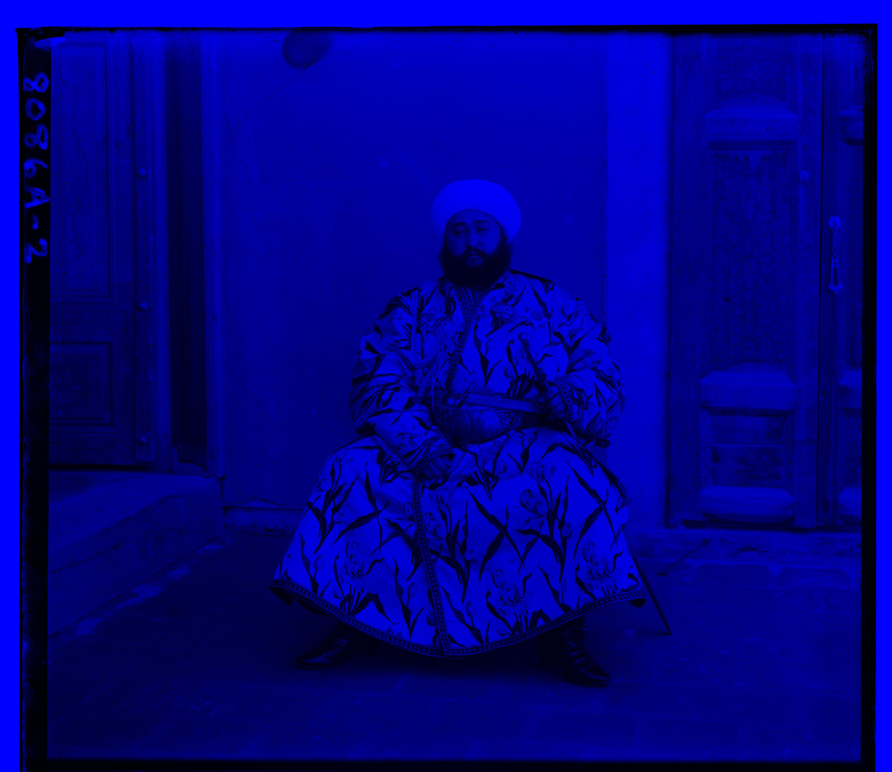
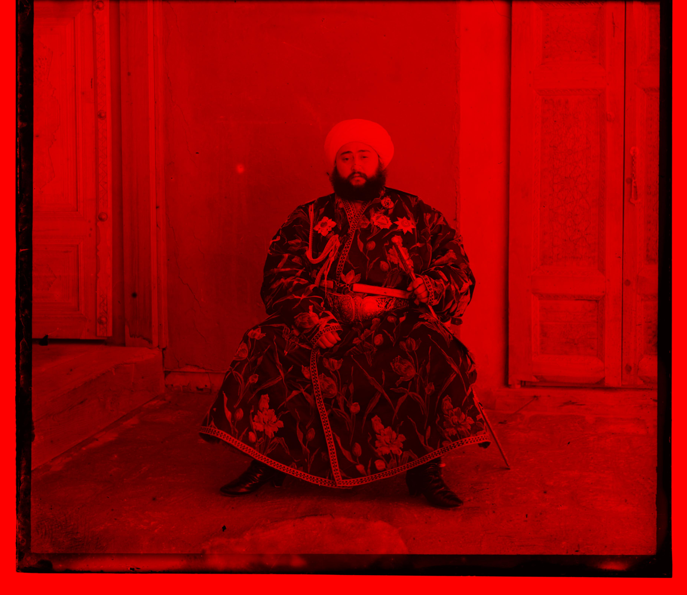
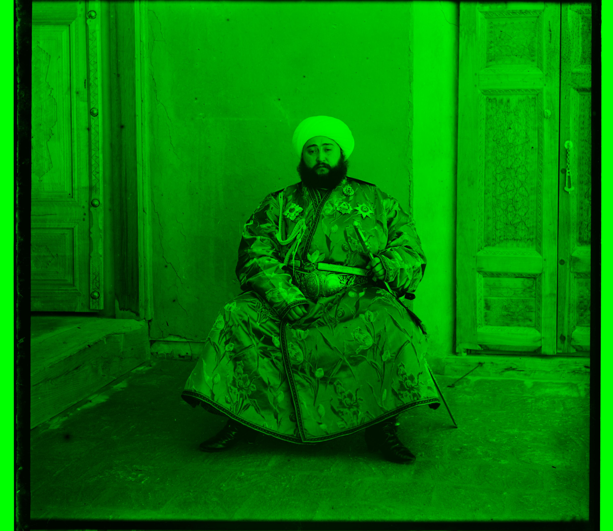
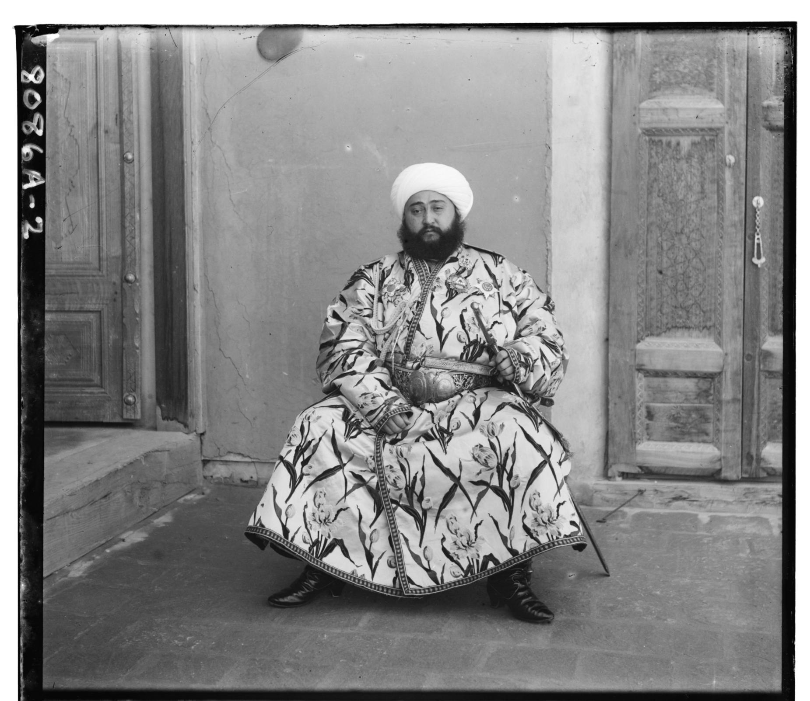
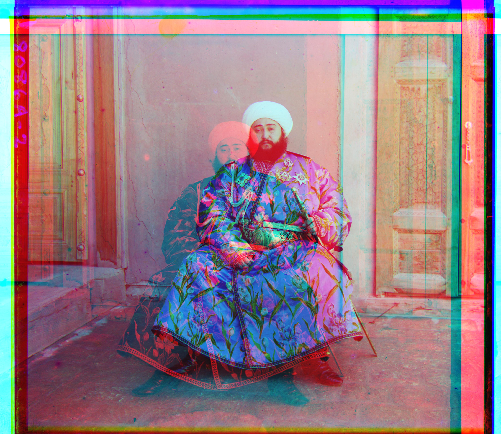
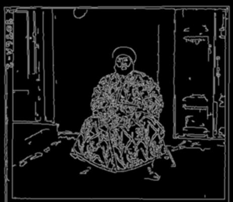

Overview
Sergei Mikhailovich Prokudin-Gorskii (1863-1944) was a Russian chemist and photographer who as early as 1907 began working on taking color pictures in pre-revolution Russia.
After recieving the Tzar's special permission, Prokudin-Gorskii travelled across the Russian Empire and took color photographs of different scenes in early 20th century Russia. He recorded three exposures of every scene onto glass plates using a red, green, and blue filter.
He envisioned a way to combine these 3 images on top of eachother to achieve a color photograph. However, before he could finish his project, he had to flee Russia due to war. His RGB glass plate negatives survived, and since then the Library of Congress has made them public.
In this project, we work on algorithmically aligining these color films on top of eachother to generate color images from the Red, Blue, and Green glass plate negatives.
Procedure
My Process Initially started by dividing the image into three slices with the top third being the blue frame, the middle, third being the red frame, and the bottom third being the green frame. Below, you can see the blue, red, and green slices of the image of Emir of Bukhara.
In order to align the images, I use the blue image as a base. I then align the red and green images to the blue one.



For smaller images such as that of the cathedral or monastery, I can simply search all alignments within a 30x30 pixel window, and pick the one that maximizes the Normalized Cross Correlation. This however, becomes difficult for larger images as they may have ideal alignments
outside of the pixel range. To speed up the search for these images, I implemented an image pyramid. I scale the 2 images I am trying to align down to a 512x512 pixel size. From there I find a suitable alignment within a 30x30 window. I then work my way back up the images using
the smaller image's alignment as a baseline to focus my search on the larger images.

Image pyramid of blue slice of image of Emir of Bukhara.
In order to improve the alignment even better, I cropped 10% off all sides of the images in order to reduce the effects of the noisy edges. The image pyramid would then give me an alignment that would work for most images, but some of the larger images were still not aligned well and could be improved.
As you can see below, the outputs from this base model gave relatively good results for the sculpture and self portrait images, but the photo of Emir of Bukhara was very poorly aligned.



Bells and Whistles: Edge Detection
To improve the alignment for the images that weren't well aligned like the one Emir, I decided to implement a custom metric that would specifcally try and align edges of the 2 images. The first step in order to do this was to take the original image and pass it through a Canny
Edge detector. This edge detector would find pixels who were different from the one's around it by a large enough margin that we can assume it was an edge. You can see the output for the edge detector below. I then found the normalized cross correlations between the edges of
the different slices of the original image. I found out that since the edges were typically 1-2 pixels wide, I would have really low cross correlation scores. In order to fix this, I added some noise to the edges using a Gaussian Blur process. This gave the alignment a bit of extra
margin for error, allowing for the algorithm to find relatively accurate alignments.

From left to right: Original Emir Blue Channel, Edges of Emir Blue Channel, Blurred Edges of Emir Blue Channel
I originally tried aligning the edges only, but I found that the extra noise from things like the background door, the fabric he was wearning, and the Canny edge detector's noise all contributed to relatively inaccurate results. However, after combining the edge correlation with
the correlation of the pixel values, I was able to get much more stable results. I used a custom metric where I took 20% of the pixel value's correlation and summed it with the edge's correlation to get a new metric. This 20% was chosen after trying many different values, and it
seemed to work best for most images. This made it so that 2/3 of the metric was contributed from the pixel brightness, and 1/3 of the value was coming from the edge detector. As you can see below, the edge detector provided drastic improvements in alignment for the Emir of Bukhara
image.
Left: Emir alignment without edge detector, Right: Emir alignment with edge detector